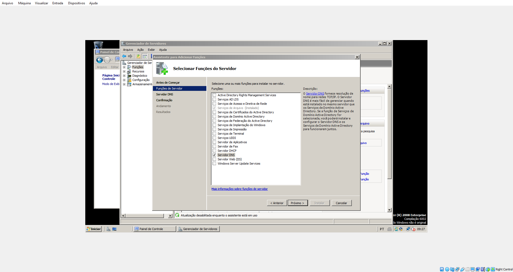

Em gerenciador de servidores, selecionar a aba Funções e Adicionar Funções. Na nova aba prosseguir para selecionar a opção de Servidor DNS e prosseguir com os passos para a instalação do mesmo.
Em Windows -> Ferramentas administrativas -> DNS adicionar uma nova zona de pesquisa direta (busca por IP) e de pesquisa inversa (busca por texto). Com as zonas configuradas adicionar um novo host preenchendo o nome (ex: server.com) e o IP e selecionando a box de Criar registro de ponteiro associado. Após a associação adicionar um novo Alias referente ao domínio em questão. Para testar os passos em questão basta iniciar o nslookup e digitar o endereço de IP ou o nome de host.